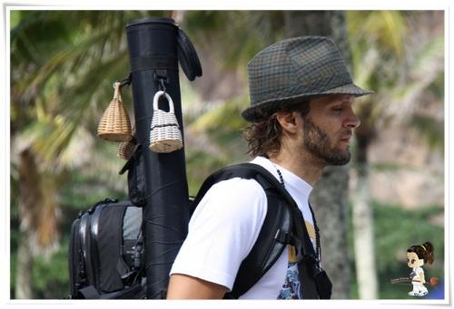
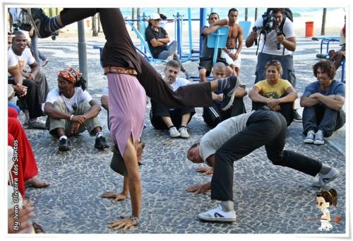

интервью c Itapua Beiramar
Друзья, это мой сотый пост здесь и восьмисотый на инсайде в целом, так что я решил вернуться к истокам нашего коммьюнити и чтонить перевести)
Под катом небольшое интервью, которое команда Capoeira Vibe взяла у местре Итапуа Бейрама, по случаю запуска проекта «Сapoeira Q roda».

Приветствуем, местре! Вы не могли бы представиться для наших читателей?
Меня зовут Итапуа Бейрамар, я из Рио, мне 35 лет, и я вот уже 36 лет занимаюсь капоэйрой, считая время, проведённое в утробе матери, ведь мой отец не только местре, Нестор Капоэйра (автор нескольких известных книг о капоэйре, в том числе „Малой книги о капоэйре“), но и мой учитель. Всю свою жизнь я играю капоэйру. И сейчас я нашел в ней свое место, свой способ мышления и путь самовыражения и обучения других. Одним словом свою капоэйру!
Не могли бы вы пояснить, что вы подразумеваете под «Своей капоэйрой»?
Для капоэйриста это значимое достижение, когда получается осознать «свою капоэйру». После долгого периода наблюдения, изучения, осмысления, ты начинаешь сам прокладывать себе путь и начинаешь создавать новое, новый способ обучать, новую манеру двигаться, даже создаёшь новые движения. Начинаешь не только получать, но и отдавать, добавлять в капоэйру. Конечно, ты продолжаешь учиться. Для меня это некоторый определяющий рубеж в познании капоэйры. Это очень ясный сдвиг, который можно заметить в некоторых.
Для чего был создан ABeiramar.tv и как долго к этому шло?
Abeiramar.tv стартовал в сентябре 2010, но снимать видео о капоэйре я начал ещё в 2005, мы с мамой сняли документальный фильм о Mestre Leopoldina, местре моего отца. Так получился фильм “Mestre Leopoldina: A Fina Flor da Malandragem”.
Меня очень вдохновила возможность запечатлеть капоэйру на видео. В Бразилии этим особо никто не занимался. Я ещё и сёрфер, а у сёрферов это само собой разумеющееся. Обдумав все возможности, я понял, что капоэйра выиграет если начать её снимать и потом использовать эти видео. Я раздобыл камеру и начал снимать своих учеников, чтобы показать им как они двигаются, стал смотреть как играю сам. Потом был DVD “A Escola do Nestor Capoeira” рассказывающей о школе моего отца в Рио.
Я брал камеру с собой, куда бы ни шёл. Снимая игры, я пришёл к выводу, что порой, засняв какое-либо движение, в моих руках оказывается уникальный материал. Ведь то, что случилось в игре между игроками, больше никогда не повторится. А засняв, ты можешь пересмотреть или показать это другим! Я стал снимать больше в поисках новых движений и интересного взаимодействия между людьми.
Как-то раз мне повезло настолько, что я заснял очень интересную игру Гату Феликса и местре Камалеау. Я выложил запись в интернет и увидел, что ей заинтересовалось очень много людей. Это вдохновило меня выкладывать свои видео в интернет.
У капоэйры не было своего тв-пространства, даже в Бразилии, поэтому мы с женой и друзьями решили создать в интернете регулярно обновляемый и пополняемый канал.
Видео – это замечательный инструмент для изучения капоэйры, в особенности потому, что ты сможешь увидеть капоэйру со всего мира. С одних только видео капоэйре не научишься, но как вспомогательный инструмент они хороши, главное не забывать ещё и тренироваться.
С чего начался проект „Capoeira Q Roda“?
Я мечтал о таком проекте с самого начала. У сёрферов такого видео полно: собрались компанией, отправились в путь и засняли всё это дело. Я сказал моей жене Кэрол, которая была тогда на седьмом месяце: «Давай отправимся в Сальвадор, как мы обычно делали, но на этот раз все заснимем». У нас там были друзья, Жеже и Гуашини, который были большими фанатами Абейрамар.тв и моих записей. Гуашини помог нам организовать маршрут и договориться с местными мастерами.
Вернувшись после поездки, во время которой мы сделали много видео, мы положили её в долгий ящик к другим проектам, которые, я знал, займут много времени на монтаж и режиссуру. Процесс занимал обычно от 6 до 8 часов в день и мог растянуться на месяц-другой. Это было как раз то время, которого у меня не было, ведь мне нужно было оплачивать счета, как и всем остальным.
Тогда один мой друг пришел ко мне с идеей краудфандинга, чтобы люди могли поучаствовать в финансировании проекта. Прикинув сколько человек посещает наш сайт, и тот факт, что раньше никто с таким проектом не выступал, я решил что стоит попробовать.
К счастью, мы собрали нужные средства, а платформа, на которой мы запускались, сообщила, что это был самый стремительный успех на их памяти. Я очень рад, что у нас получилось воплотить мою давнюю мечту.
Что по-вашему капоэйра дала вам?
Даже не смотря на то, что я родился в капоэйре, это был мой сознательный выбор — остаться в ней. Я получил лучшую жизнь, широкий взгляд на вещи, индивидуальность, и опыт, помогаюжий взаимодействовать с другими и понимать их. Я получил потрясающий инструмент, помогающий мне прожить мою жизнь наилучшим способом.

Каким вы видите развитие капоэйры в будущем?
Я думаю у капоэйры еще многое впереди, и более того, я считаю, что видео — хорошоя возможность для людей, не играющих капоэйру, лучше понимать ее и ценить. Это моя цель в жизни. Также как миллионы людей, не играющих в футбол, следят за матчами и понимают суть игры. Не знаю, получится ли у меня, но я постараюсь сделать это же для капоэйры. Если вам будет что показать, люди с радостью станут смотреть, и капоэйра тут может дать вам куда больше, чем футбол или бои без правил.
Я надеюсь будет становиться все больше таких поектов, как Dundak, Bassula, Capoeira Vibe и Abeiramar.tv, больше каналов о капоэйре, больше марок одежды, больше программ для капоэристов и о капоэйре, поддерживающих ее. Капоэйра должна быть единой, без оглядок на группы и стили.
Капоэйра растет, развивается, и это уже не остановить. Я очень надеюсь, что большинство границ падут, чтобы мы могли быть вместе, не теряя индивидуальности. Это главный парадокс. Ты трудишься и тренируешься в группе, но ты сам по себе личность. Ты должен развиваться как человек, но не думать только о себе. Я бы хотел и надеюсь, что капоэйра сможет стать единой общностью людей, которые ценят и получают радость от того, что капоэйра может им дать.
Какой совет вы бы дали другим капоэристам?
Продолжайте тренироваться, и сохраняйте разум открытым, ведь перед вам столько путей, чтобы развиваться и расти. И по мере тренировки вашего тела, не забывайте о музыкальной стороне капоэйры. Тренируйтесь и старайтесь узнать так много, как только сможете, чтобы понять свой путь в капоэйре.
Никогда не прекращайте радоваться капоэйре. Ведь веселье и радость ваш основной мотиватор. Чем больше вы тренируетесь, тем больше радости вы можете получить. С самого начала ты видишь веселье капоэйры, и чем больше тренируешься, тем больше его для тебя открывается. Тяжкий труд без причины для меня не имеет смысла. Вы должны получать удовольствие! Пожалуйста!
Спасибо, местре!
От меня спасибо Кавейре за помощь с переводом и всем участникам инсайда, за то что уже почти три года остаетесь с нами. Дальше будет только лучше! Аше!
зы — извиняюсь за возможные опечатки — нет русской клавиатуры, а память и замыленный глаз иногда подводят. Буду править по мере вычитки)